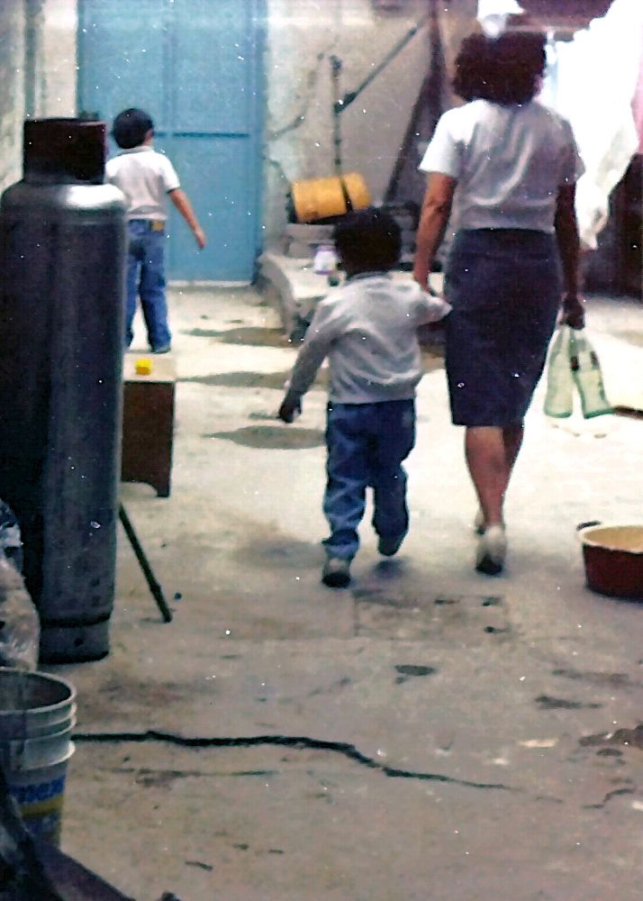
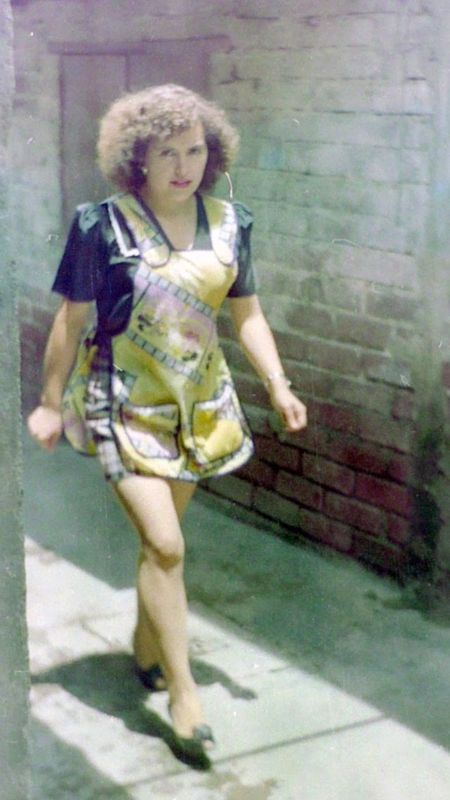

Mamita
11 de Agosto, 2025
Mi intención al escribir todo esto, no es más que compartir contigo algunas de mis memorias. Al principio pensé que era realmente poco lo que recordaría de Mamita, pero haciendo memoria, fui recordando cada vez más y más detalles. Voy a procurar ir en orden cronológico, aunque, admito que puedo cometer varios errores, porque recordar fechas exactas es bastante difícil.
Mis recuerdos más antiguos son muy vagos, solo situaciones concretas sin mucho contexto. Recuerdo muy bien cómo nos poníamos a ver la tele tu y yo con Mamita antes de que naciera Petaca. Veíamos series como Rescate 911, Misterios sin resolver, McGiver o Mission Imposible. Tengo un recuerdo muy marcado de una de esas veces, cuando estábamos viendo la tele, y Mamita se dio la vuelta para decirme al oído. "Dile a tu papá que te dé para una 'gasolinita'" (decía gasolinita para referirse a una golosinita), entonces yo me puse muy contento y fui corriendo al taller de Pá que estaba en el cuarto de arriba a pedirle dinero, en lo que Mamita y tú decidían qué iban a querer de golosina. Ella siempre se compraba su coca y sus papas, y tú algunas veces pedías doritos y otras veces unos crujitos.

16 de Agosto, 2025
Otra de las cosas que recuerdo es cuando me ayudaba a estudiar para los exámenes. No importaba lo que ella estuviera haciendo, siempre dedicaba tiempo a ayudarnos con las tareas, los trabajos escolares o a estudiar para los exámenes. La recuerdo cocinando mientras me preguntaba las capitales de todos los países del continente americano, o las lunas de todos los planetas del sistema solar. Me acuerdo como me preguntaba fechas y nombres de la historia de México mientras ella andaba apurada matando moscas en la cocina. Siempre con su delantal y siempre de buen humor, haciendo bromas sobre las materias que repasábamos.
Era muy estricta para muchas cosas, pero sobre todo en el tema de los estudios. Hubo una vez, cuando yo iba a la primaria Federico Froebel, en que ingenuamente escribí en el cuaderno de tareas: "Mañana no hay clases" porque no quería ir a la escuela al día siguiente. Y aunque a Mamita se le hizo raro cuando lo leyó, no me dijo nada, y fue hasta esa noche como a las 10:00 pm cuando comprobó (no sé cómo) que eso de que no había clases no era cierto, obviamente lo supo desde un principio, pero esperó hasta estar segura para darme una lección, así que me puso en ese mismo momento a hacer la tarea. Ahí estaba yo a la media noche chillando porque me faltaba mucho por hacer. Hasta recuerdo que Pá le decía: "Ya déjalo que se duerma", y Mamita le contestaba: "No, todavía le falta mucho". Pero lo que se me quedó mas marcado, fue cuando ella estaba revisando mis libros, esa misma noche, mientras yo chillaba haciendo la tarea, y encontró en uno los libros, la instrucción, escrita con lápiz: "resolver de la página 'tal' a 'tal'", entonces levantó el libro, lo giró hacia mi para que viera lo que estaba escrito, y me dijo: "¡Mira chiquitito!", en ese tono de "ya valiste gorro" 🤣.
La verdad no recuerdo hasta que hora me dormí esa noche, pero es un recuerdo que hasta la fecha tengo muy marcado. Hoy en día me da risa, pero en ese momento se me vino el mundo encima. Esa fue la primera y última vez que intenté engañarla de que al día siguiente no habría clases.

← Volver a Historias